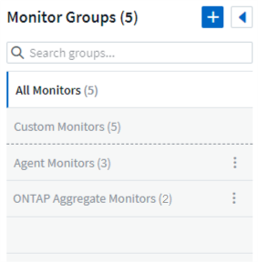
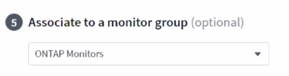

请求文档变更
请求文档变更 在 GitHub 上编辑
在 GitHub 上编辑 提供者指南
提供者指南系统监控器
提供者
Cloud Insights 包括许多系统定义的指标和日志监控器。监控器界面将进行多项更改，以适应这些系统监控器。本节将介绍这些内容。

|
默认情况下，系统监控器处于 Paused_state 。在恢复监控之前，您必须确保已在数据收集器中启用 _Advanced 计数器数据收集 _ 和 _Enable ONTAP EMS log collection 。可以在 ONTAP 数据收集器中的 Advanced Configuration 下找到这些选项：
|
监控组
通过分组，您可以查看和管理相关监控器。例如，您可以为环境中的存储配置一个专用监控组，也可以为特定收件人列表配置相关监控器。

组名称旁边会显示组中包含的监控器数量。
|
|
自定义监控器可以暂停，恢复，删除或移动到其他组。系统定义的监控器可以暂停和恢复，但不能删除或移动。 |
自定义监控组
要创建新的自定义监控组，请单击 * "+" 创建新监控组 * 按钮。输入组的名称，然后单击 * 创建组 * 。此时将创建一个具有此名称的空组。
要向组中添加监控器，请转到 all monitors 组（建议）并执行以下操作之一：
-
要添加单个显示器，请单击该显示器右侧的菜单，然后选择 Add to Group 。选择要将监控器添加到的组。
-
单击监控器名称以打开监控器的编辑视图，然后在 Associate to a monitor group 部分中选择一个组。

通过单击某个组并从菜单中选择 Remove from Group 来删除监控器。您不能从 all monitors 或 Custom Monitors 组中删除监控器。要从这些组中删除监控器，必须删除该监控器本身。
|
|
从组中删除监控器不会从 Cloud Insights 中删除该监控器。要完全删除某个监控器，请选择该监控器，然后单击 Delete 。此操作还会将其从所属组中删除，并且任何用户都无法再使用它。 |
您也可以按相同方式将显示器移动到其他组，选择 move to Group 。
要一次性暂停或恢复组中的所有监视器，请选择该组的菜单，然后单击 Pause 或 Resume 。
使用同一菜单重命名或删除组。删除组不会从 Cloud Insights 中删除这些监控器；它们在 _all monitors_中 仍然可用。

监控器说明
系统定义的监控器由预定义的指标和条件以及默认说明和更正操作组成，这些内容无法修改。您可以修改系统定义的监控器的通知收件人列表。要查看指标，条件，问题描述和更正操作，或者修改收件人列表，请打开系统定义的监控组，然后单击列表中的监控器名称。
无法修改或删除系统定义的监控组。
以下系统定义的监控器可在所记录的组中使用。
-
* ONTAP Infrastructure* 可监控 ONTAP 集群中与基础架构相关的问题。
-
* ONTAP 工作负载示例 * 包括与工作负载相关的问题的监控器。
-
两个组中的监控器默认为 _Paused_state 。
以下是 Cloud Insights 当前附带的系统监控器：
指标监控器
监控器名称 |
severity |
Description |
更正操作 |
光纤通道端口利用率高 |
严重 |
光纤通道协议端口用于在客户主机系统和 ONTAP LUN 之间接收和传输 SAN 流量。如果端口利用率较高，则会成为瓶颈，并最终影响光纤通道协议工作负载中敏感数据的性能。警告警报表示应采取计划内操作来平衡网络流量。严重警报表示服务即将中断，应采取紧急措施平衡网络流量，以确保服务连续性。 |
如果违反严重阈值，则需要立即采取措施以最大限度地减少服务中断： 1.将工作负载移至利用率较低的另一个 FCP 端口 2 。仅通过 ONTAP 中的 QoS 策略或主机端配置将某些 LUN 的流量限制为基本工作，以降低 FCP 端口的利用率… 如果违反警告阈值，请尽快采取以下措施： 1.请考虑配置更多 FCP 端口来处理数据流量，以便在更多端口 2 之间分配端口利用率。将工作负载移至利用率较低的另一个 FCP 端口 3 。仅通过 ONTAP 中的 QoS 策略或主机端配置将某些 LUN 的流量限制为基本工作，以降低 FCP 端口的利用率 |
LUN 高延迟 |
严重 |
LUN 是指通常由性能敏感型应用程序（如数据库）驱动的 IO 流量的对象。高 LUN 延迟意味着应用程序本身可能会受到影响，无法完成其任务。警告警报表示应采取计划内操作将 LUN 移动到相应的节点或聚合。严重警报表示服务即将中断，应采取紧急措施以确保服务连续性。以下是基于介质类型的预期延迟 - SSD 最长 1-2 毫秒； SAS 最长 8-10 毫秒； SATA HDD 17 至 20 毫秒 |
如果违反严重阈值，则需要立即采取措施以最大限度地减少服务中断： 1.如果 LUN 或其卷具有关联的 QoS 策略，请评估其阈值限制并验证它们是否导致 LUN 工作负载受到限制… 如果违反警告阈值，请尽快采取以下措施： 1.如果聚合的利用率也较高，请将 LUN 移动到另一个聚合 2 。如果此节点的利用率也较高，请将此卷移动到另一个节点或减少节点 3 的总工作负载。如果 LUN 或其卷具有关联的 QoS 策略，请评估其阈值限制并验证它们是否导致 LUN 工作负载受到限制 |
网络端口利用率高 |
严重 |
网络端口用于在客户主机系统和 ONTAP 卷之间接收和传输 NFS ， CIFS 和 iSCSI 协议流量。如果端口利用率较高，则会成为瓶颈，并最终影响 NFS ， CIFS 和 iSCSI 工作负载的性能。警告警报表示应采取计划内操作来平衡网络流量。严重警报表示服务即将中断，应采取紧急措施平衡网络流量，以确保服务连续性。 |
如果违反严重阈值，则需要立即采取措施以最大限度地减少服务中断： 1.仅通过 ONTAP 中的 QoS 策略或主机端分析将某些卷的流量限制为基本工作，以降低网络端口的利用率 2.配置一个或多个卷以使用另一个利用率较低的网络端口… 如果违反警告阈值，请尽快采取以下措施： 1.请考虑配置更多网络端口来处理数据流量，以便在更多端口 2 之间分配端口利用率。配置一个或多个卷以使用另一个利用率较低的网络端口 |
NVMe 命名空间延迟高 |
严重 |
NVMe 命名空间是指通常由性能敏感型应用程序（如数据库）驱动的 IO 流量提供服务的对象。NVMe 命名空间延迟较高意味着应用程序本身可能会受到影响，无法完成其任务。警告警报表示应采取计划内操作将 LUN 移动到相应的节点或聚合。严重警报表示服务即将中断，应采取紧急措施以确保服务连续性。 |
如果违反严重阈值，则需要立即采取措施以最大限度地减少服务中断： 1.如果为 NVMe 命名空间或其卷分配了 QoS 策略，请评估其限制阈值，以防其导致 NVMe 命名空间工作负载受到限制… 如果违反警告阈值，请尽快采取以下措施： 1.如果聚合的利用率也较高，请将 LUN 移动到另一个聚合 2 。如果此节点的利用率也较高，请将此卷移动到另一个节点或减少节点 3 的总工作负载。如果 NVMe 命名空间或其卷已分配 QoS 策略，请评估其限制阈值，以防其导致 NVMe 命名空间工作负载受到限制 |
qtree 容量硬限制 |
严重 |
qtree 是一种逻辑上定义的文件系统，可以作为卷中根目录的一个特殊子目录存在。每个 qtree 都有一个以 KB 为单位的空间配额，可用于存储数据，以控制卷中用户数据的增长，并且不超过其总容量。qtree 保持软存储容量配额，以便能够在达到 qtree 中的总容量配额限制并无法再存储数据之前主动向用户发出警报。监控 qtree 中存储的数据量可确保用户接收到无中断的数据服务。 |
如果违反严重阈值，则需要立即采取措施以最大限度地减少服务中断： 1.请考虑增加树空间配额以适应增长 2 。请考虑指示用户删除树中不再需要的不需要的数据以释放空间 |
qtree 容量已满 |
严重 |
qtree 是一种逻辑上定义的文件系统，可以作为卷中根目录的一个特殊子目录存在。每个 qtree 都有一个默认空间配额或一个配额策略定义的配额，用于在卷容量范围内限制树中存储的数据量。警告警报表示应采取计划内操作来增加空间。严重警报表示服务即将中断，应采取紧急措施释放空间以确保服务连续性。 |
如果违反严重阈值，则需要立即采取措施以最大限度地减少服务中断： 1.请考虑增加 qtree 的空间以适应增长 2 。请考虑删除不再需要的数据以释放空间… 如果违反警告阈值，请尽快采取以下措施： 1.请考虑增加 qtree 的空间以适应增长 2 。请考虑删除不再需要的数据以释放空间 |
qtree 容量软限制 |
警告 |
qtree 是一种逻辑上定义的文件系统，可以作为卷中根目录的一个特殊子目录存在。每个 qtree 都有一个以 KB 为单位的空间配额，可用于存储数据，以控制卷中用户数据的增长，并且不超过其总容量。qtree 保持软存储容量配额，以便能够在达到 qtree 中的总容量配额限制并无法再存储数据之前主动向用户发出警报。监控 qtree 中存储的数据量可确保用户接收到无中断的数据服务。 |
如果违反警告阈值，请尽快采取以下措施： 1.请考虑增加树空间配额以适应增长 2 。请考虑指示用户删除树中不再需要的不需要的数据以释放空间 |
qtree 文件硬限制 |
严重 |
qtree 是一种逻辑上定义的文件系统，可以作为卷中根目录的一个特殊子目录存在。每个 qtree 都有一个可包含的文件数量配额，以便在卷中保持可管理的文件系统大小。qtree 会保留硬文件编号配额，超过此配额，树中的新文件将被拒绝。监控 qtree 中的文件数量可确保用户获得无中断的数据服务。 |
如果违反严重阈值，则需要立即采取措施以最大限度地减少服务中断： 1.请考虑增加 qtree 2 的文件数量配额。从 qtree 文件系统中删除不再使用的文件。 |
qtree 文件软限制 |
警告 |
qtree 是一种逻辑上定义的文件系统，可以作为卷中根目录的一个特殊子目录存在。每个 qtree 都有一个可包含的文件数量配额，以便在卷中保持可管理的文件系统大小。qtree 会保留软文件编号配额，以便能够在达到 qtree 中的文件限制并无法存储任何其他文件之前主动向用户发出警报。监控 qtree 中的文件数量可确保用户获得无中断的数据服务。 |
如果违反警告阈值，请尽快采取以下措施： 1.请考虑增加 qtree 2 的文件数量配额。从 qtree 文件系统中删除不再使用的文件 |
Snapshot 预留空间已满 |
严重 |
存储应用程序和客户数据需要卷的存储容量。其中一部分空间称为 Snapshot 预留空间，用于存储快照，以便在本地保护数据。ONTAP 卷中存储的新数据和更新数据越多，快照容量就越多，未来的新数据或更新数据可用的快照存储容量也就越少。如果卷中的快照数据容量达到总快照预留空间，可能会导致客户无法存储新的快照数据，并降低卷中数据的保护级别。监控卷已用快照容量可确保数据服务的连续性。 |
如果违反严重阈值，则需要立即采取措施以最大限度地减少服务中断： 1.请考虑将快照配置为在快照预留已满时使用卷中的数据空间 2 。请考虑删除一些可能不再需要的旧快照以释放空间… 如果违反警告阈值，请尽快采取以下措施： 1.请考虑增加卷中的快照预留空间以适应增长 2 。请考虑将快照配置为在快照预留空间已满时使用卷中的数据空间 |
存储容量限制 |
严重 |
当存储池（聚合）填满时， I/O 操作会减慢并最终停止，从而导致存储中断意外事件。警告警报表示应尽快采取计划内的操作来还原最小可用空间。严重警报表示服务即将中断，应采取紧急措施释放空间以确保服务连续性。 |
如果违反严重阈值，则需要立即采取措施以最大限度地减少服务中断： 1.删除非关键卷上的快照 2.删除非必要工作负载且可从非存储副本还原的卷或 LUN… 如果违反警告阈值，请尽快采取以下措施： 1.将一个或多个卷移动到其他存储位置 2.添加更多存储容量 3.更改存储效率设置或将非活动数据分层到云存储 |
存储性能限制 |
严重 |
当存储系统达到性能限制时，操作会减慢，延迟会增加，工作负载和应用程序可能会开始出现故障。ONTAP 会评估因工作负载而导致的存储池利用率，并估计已消耗的性能百分比。警告警报表示应采取计划内操作，将存储池负载减少到，因为可能没有足够的存储池性能来处理工作负载峰值。严重警报表示性能下降即将发生，应采取紧急措施来减少存储池负载，以确保服务连续性。 |
如果违反严重阈值，则需要立即采取措施以最大限度地减少服务中断： 1.暂停计划的任务，例如 Snapshot 或 SnapMirror 复制 2.空闲的非基本工作负载… 如果违反警告阈值，请尽快采取以下措施： 1.将一个或多个工作负载移动到其他存储位置 2.添加更多存储节点（ AFF ）或磁盘架（ FAS ）并重新分配工作负载 3.更改工作负载特征（块大小，应用程序缓存等） |
用户配额容量硬限制 |
严重 |
ONTAP 可识别有权访问卷中的卷，文件或目录的 Unix 或 Windows 系统的用户。因此， ONTAP 允许客户为其 Linux 或 Windows 系统的用户或用户组配置存储容量。用户或组策略配额用于限制用户可用于其自己数据的空间量。此配额的硬限制允许在达到总容量配额之前，当卷中已用容量正确时向用户发出通知。监控用户配额或组配额中存储的数据量可确保用户获得不间断的数据服务。 |
如果违反严重阈值，则需要立即采取措施以最大限度地减少服务中断： 1.请考虑增加用户或组配额的空间，以适应增长 2 。请考虑指示用户或组删除不再需要的数据以释放空间。 |
用户配额容量软限制 |
警告 |
ONTAP 可识别有权访问卷中的卷，文件或目录的 Unix 或 Windows 系统的用户。因此， ONTAP 允许客户为其 Linux 或 Windows 系统的用户或用户组配置存储容量。用户或组策略配额用于限制用户可用于其自己数据的空间量。此配额的软限制允许在卷中已用容量达到总容量配额时主动通知用户。监控用户配额或组配额中存储的数据量可确保用户获得不间断的数据服务。 |
如果违反警告阈值，请尽快采取以下措施： 1.请考虑增加用户或组配额的空间，以适应增长 2 。请考虑删除不再需要的数据以释放空间。 |
卷容量已满 |
严重 |
存储应用程序和客户数据需要卷的存储容量。ONTAP 卷中存储的数据越多，未来数据的存储可用性就越低。如果卷中的数据存储容量达到总存储容量，则可能会导致客户由于缺少存储容量而无法存储数据。监控卷已用存储容量可确保数据服务的连续性。 |
如果违反严重阈值，则需要立即采取措施以最大限度地减少服务中断： 1.请考虑增加卷的空间以适应增长 2 。请考虑删除不再需要的数据以释放空间… 如果违反警告阈值，请尽快采取以下措施： 1.请考虑增加卷的空间以适应此增长 |
卷高延迟 |
严重 |
卷是指通常由性能敏感型应用程序（包括 DevOps 应用程序，主目录和数据库）驱动的 IO 流量提供服务的对象。高卷延迟意味着应用程序本身可能会受到影响，无法完成其任务。监控卷延迟对于保持应用程序一致的性能至关重要。以下是基于介质类型的预期延迟 - SSD 最长 1-2 毫秒； SAS 最长 8-10 毫秒； SATA HDD 17 至 20 毫秒 |
如果违反严重阈值，则需要立即采取措施以最大限度地减少服务中断： 1.如果为卷分配了 QoS 策略，请评估其限制阈值，以防其导致卷工作负载受到限制… 如果违反警告阈值，请尽快采取以下措施： 1.如果聚合的利用率也较高，请将卷移动到另一个聚合。2. 如果为卷分配了 QoS 策略，请评估其限制阈值，以防这些阈值导致卷工作负载受到限制。3. 如果节点的利用率也较高，请将卷移动到另一个节点或减少节点的总工作负载 |
卷索引节点限制 |
严重 |
存储文件的卷使用索引节点（索引节点）来存储文件元数据。当卷用尽其索引节点分配时，无法再向其添加文件。警告警报表示应采取计划内操作来增加可用索引节点的数量。严重警报表示文件限制即将耗尽，应采取紧急措施释放索引节点以确保服务连续性。 |
如果违反严重阈值，则需要立即采取措施以最大限度地减少服务中断： 1.请考虑增加卷的索引节点值。如果索引节点值已达到最大值，请考虑将卷拆分成两个或更多卷，因为文件系统已超出最大大小 2 。考虑使用 FlexGroup ，因为它有助于容纳大型文件系统… 如果违反警告阈值，请尽快采取以下措施： 1.请考虑增加卷的索引节点值。如果索引节点值已达到最大值，请考虑将卷拆分成两个或更多卷，因为文件系统已超出最大大小 2 。请考虑使用 FlexGroup ，因为它有助于容纳大型文件系统 |
监控器名称 |
CI 严重性 |
监控问题描述 |
更正操作 |
节点高延迟 |
警告 / 严重 |
节点延迟已达到可能影响节点上应用程序性能的级别。较低的节点延迟可确保应用程序的性能稳定一致。根据介质类型，预期延迟为： SSD 最长 1-2 毫秒； SAS 最长 8-10 毫秒； SATA HDD 17 至 20 毫秒。 |
如果违反严重阈值，则应立即采取措施以最大限度地减少服务中断： 1.暂停已计划的任务，快照或 SnapMirror 复制 2.通过 QoS 限制降低低优先级工作负载的需求 3.停用非基本工作负载考虑在违反警告阈值时立即采取措施： 1.将一个或多个工作负载移动到其他存储位置 2.通过 QoS 限制降低低优先级工作负载的需求 3.添加更多存储节点（ AFF ）或磁盘架（ FAS ）并重新分配工作负载 4.更改工作负载特征（块大小，应用程序缓存等） |
节点性能限制 |
警告 / 严重 |
节点性能利用率已达到可能影响此节点所支持的 IOS 和应用程序性能的水平。低节点性能利用率可确保应用程序的性能稳定一致。 |
如果违反严重阈值，应立即采取措施，最大限度地减少服务中断： 1.暂停已计划的任务，快照或 SnapMirror 复制 2.通过 QoS 限制降低低优先级工作负载的需求 3.如果违反警告阈值，则停用非基本工作负载应考虑以下操作： 1.将一个或多个工作负载移动到其他存储位置 2.通过 QoS 限制降低低优先级工作负载的需求 3.添加更多存储节点（ AFF ）或磁盘架（ FAS ）并重新分配工作负载 4.更改工作负载特征（块大小，应用程序缓存等） |
Storage VM 高延迟 |
警告 / 严重 |
Storage VM （ SVM ）延迟已达到可能影响 Storage VM 上应用程序性能的级别。较低的 Storage VM 延迟可确保应用程序的性能稳定一致。根据介质类型，预期延迟为： SSD 最长 1-2 毫秒； SAS 最长 8-10 毫秒； SATA HDD 17 至 20 毫秒。 |
如果违反严重阈值，则立即评估分配了 QoS 策略的 Storage VM 卷的阈值限制，以验证这些卷是否正在导致卷工作负载受到限制。如果违反警告阈值，请考虑立即执行以下操作： 1.如果聚合的利用率也较高，请将 Storage VM 的某些卷移动到另一个聚合。2. 对于分配了 QoS 策略的 Storage VM 中的卷，如果阈值限制导致卷工作负载受到限制，请评估这些阈值限制 3.如果节点的利用率较高，请将 Storage VM 的某些卷移动到另一个节点或减少节点的总工作负载 |
用户配额文件硬限制 |
严重 |
卷中创建的文件数已达到严重限制，无法创建其他文件。监控存储的文件数量可确保用户获得无中断的数据服务。 |
如果违反严重阈值，则需要立即采取措施，以最大限度地减少服务中断。…请考虑采取以下措施： 1.增加特定用户的文件数量配额 2.删除不需要的文件以减少特定用户对文件配额的压力 |
用户配额文件软限制 |
警告 |
卷中创建的文件数已达到配额的阈值限制，并且接近严重限制。如果配额达到严重限制，则无法创建其他文件。监控用户存储的文件数量可确保用户获得无中断的数据服务。 |
如果违反警告阈值，请考虑立即采取措施： 1.增加特定用户配额 2 的文件数量配额。删除不需要的文件以减少特定用户对文件配额的压力 |
卷缓存未命中率 |
警告 / 严重 |
卷缓存未命中率是指从磁盘返回而不是从缓存返回的客户端应用程序读取请求的百分比。这意味着卷已达到设置的阈值。 |
如果违反严重阈值，则应立即采取措施以最大限度地减少服务中断： 1.将某些工作负载移出卷的节点以减少 IO 负载 2 。如果尚未位于卷的节点上，请通过购买和添加 Flash Cache 3 来增加 WAFL 缓存。通过 QoS 限制降低同一节点上较低优先级工作负载的需求如果违反警告阈值，请考虑立即采取措施： 1.将某些工作负载移出卷的节点以减少 IO 负载 2 。如果尚未位于卷的节点上，请通过购买和添加 Flash Cache 3 来增加 WAFL 缓存。通过 QoS 限制 4 降低同一节点上较低优先级工作负载的需求。更改工作负载特征（块大小，应用程序缓存等） |
卷 qtree 配额过量提交 |
警告 / 严重 |
卷 qtree 配额过量使用指定 qtree 配额将卷视为过量使用时的百分比。已达到为卷设置的 qtree 配额阈值。监控卷 qtree 配额过量提交可确保用户接收到无中断的数据服务。 |
如果违反严重阈值，则应立即采取措施以最大限度地减少服务中断： 1.增加卷 2 的空间。违反警告阈值时删除不需要的数据，然后考虑增加卷的空间。 |
日志监控器（未解决时间问题）
监控器名称 |
severity |
Description |
更正操作 |
AWS 凭据未初始化 |
信息 |
如果模块在初始化之前尝试从云凭据线程访问 Amazon Web Services （ AWS ）身份和访问管理（ IAM ）基于角色的凭据，则会发生此事件。 |
" 等待云凭据线程以及系统完成初始化。 |
无法访问云层 |
严重 |
存储节点无法连接到 Cloud Tier 对象存储 API 。某些数据将无法访问。 |
如果您使用内部产品，请执行以下更正操作： …使用 network interface show 命令验证集群间 LIF 是否联机且正常运行。…通过对目标节点集群间 LIF 使用 "ping" 命令检查与对象存储服务器的网络连接。…确保以下事项：…对象存储的配置未更改。…登录和连接信息为 仍然有效。…如果问题描述仍然存在，请联系 NetApp 技术支持。如果使用 Cloud Volumes ONTAP ，请执行以下更正操作： …确保对象存储的配置未更改。… 确保登录和连接信息仍然有效。…如果问题描述仍然存在，请联系 NetApp 技术支持。 |
磁盘已停止服务 |
信息 |
" 如果磁盘因标记为故障，正在清理或已进入维护中心而从服务中删除，则会发生此事件。 " |
无 |
FlexGroup 成分卷完整 |
严重 |
" FlexGroup 卷中的成分卷已满，这可能发生原因会导致服务中断。您仍然可以在 FlexGroup 卷上创建或扩展文件。但是，不能修改成分卷上存储的任何文件。因此，在尝试对 FlexGroup 卷执行写入操作时，可能会出现随机的空间不足错误。 " |
建议您使用 volume modify -files +X 命令向 FlexGroup 卷添加容量。…或者，也可以从 FlexGroup 卷中删除文件。但是，很难确定哪些文件已登录到成分卷上。 " |
FlexGroup 成分卷已接近全满 |
警告 |
" FlexGroup 卷中的成分卷空间几乎用尽，这可能会导致发生原因服务中断。可以创建和扩展文件。但是，如果成分卷用尽空间，您可能无法附加到成分卷上的文件或对其进行修改。 |
建议您使用 volume modify -files +X 命令向 FlexGroup 卷添加容量。…或者，也可以从 FlexGroup 卷中删除文件。但是，很难确定哪些文件已登录到成分卷上。 " |
FlexGroup 成分卷接近索引节点数 |
警告 |
" FlexGroup 卷中的成分卷几乎没有索引节点，这可能会导致发生原因服务中断。成分卷收到的创建请求小于平均值。这可能会影响 FlexGroup 卷的整体性能，因为请求会路由到索引节点数更多的成分卷。 " |
建议您使用 volume modify -files +X 命令向 FlexGroup 卷添加容量。…或者，也可以从 FlexGroup 卷中删除文件。但是，很难确定哪些文件已登录到成分卷上。 " |
FlexGroup 成分卷已用尽索引节点 |
严重 |
" FlexGroup 卷的成分卷已用尽索引节点，这可能会导致发生原因服务中断。您不能在此成分卷上创建新文件。这可能会导致整个 FlexGroup 卷中的内容分布不平衡。 " |
建议您使用 volume modify -files +X 命令向 FlexGroup 卷添加容量。…或者，也可以从 FlexGroup 卷中删除文件。但是，很难确定哪些文件已登录到成分卷上。 " |
LUN 脱机 |
信息 |
手动使 LUN 脱机时会发生此事件。 |
将 LUN 恢复联机。 |
主单元风扇出现故障 |
警告 |
一个或多个主单元风扇出现故障。系统仍可正常运行。…但是，如果此情况持续时间过长，则过热可能会触发自动关闭。 |
" 重新拔插故障风扇。如果此错误仍然存在，请更换它们。 |
主单元风扇处于警告状态 |
信息 |
如果一个或多个主设备风扇处于警告状态，则会发生此事件。 |
更换指示的风扇以避免过热。 |
NVRAM 电池电量低 |
警告 |
NVRAM 电池容量严重不足。如果电池电量耗尽，可能会丢失数据。…如果配置了 AutoSupport 或 "call home" 消息，则系统会生成此消息并将其传输到 NetApp 技术支持和已配置的目标。成功传送 AutoSupport 消息可显著提高问题的确定和解决能力。 |
执行以下更正操作：…使用 system node environment sensors show 命令查看电池的当前状态，容量和充电状态。…如果最近更换了电池或系统长时间不运行， 监控电池以验证其是否正在正常充电。…如果电池运行时间继续降低到临界水平以下，并且存储系统自动关闭，请联系 NetApp 技术支持。 |
未配置服务处理器 |
警告 |
" 此事件每周发生一次，提醒您配置服务处理器（ SP ）。SP 是一种物理设备，集成在您的系统中，用于提供远程访问和远程管理功能。您应将 SP 配置为使用其全部功能。 |
执行以下更正操作：…使用 system service-processor network modify 命令配置 SP 。…可选， 使用 system service-processor network show 命令获取 SP 的 MAC 地址。…使用 system service-processor network show 命令验证 SP 网络配置。…使用 system service-processor network show AutoSupport 命令验证 SP 是否可以发送 AutoSupport 电子邮件。注意：在问题描述此命令之前，应在 ONTAP 中配置 AutoSupport 电子邮件主机和收件人。 |
服务处理器脱机 |
严重 |
ONTAP 不再从服务处理器（ SP ）接收检测信号，即使已执行所有 SP 恢复操作也是如此。如果没有 SP ， ONTAP 将无法监控硬件的运行状况。…系统将关闭，以防止硬件损坏和数据丢失。设置崩溃警报，以便在 SP 脱机时立即收到通知。 |
通过执行以下操作重新启动系统：…将控制器从机箱中拉出。…将控制器推回。…重新打开控制器。…如果问题仍然存在，请更换控制器模块。 |
磁盘架风扇出现故障 |
严重 |
' 磁盘架中指示的散热风扇或风扇模块出现故障。磁盘架中的磁盘可能无法获得足够的散热气流，从而可能导致磁盘故障。 " |
执行以下更正操作：…验证风扇模块是否已完全就位并牢固。注：风扇集成在某些磁盘架的电源模块中。…如果问题描述仍然存在，请更换风扇模块。…如果问题描述仍然存在，请联系 NetApp 技术支持以获得帮助。 |
由于主单元风扇故障，系统无法运行 |
严重 |
" 一个或多个主单元风扇发生故障，导致系统运行中断。这可能会导致数据丢失。 |
更换发生故障的风扇。 |
未分配的磁盘 |
信息 |
系统具有未分配的磁盘 - 正在浪费容量，并且您的系统可能会应用某些配置错误或部分配置更改。 |
执行以下更正操作：…使用 disk show -n 命令确定哪些磁盘已取消分配。…使用 disk assign 命令将这些磁盘分配给系统。 |
日志监控器已按时间解析
监控器名称 |
severity |
Description |
更正操作 |
防病毒服务器繁忙 |
警告 |
防病毒服务器太忙，无法接受任何新的扫描请求。 |
如果此消息频繁出现，请确保有足够的防病毒服务器来处理 SVM 生成的病毒扫描负载。 |
IAM 角色的 AWS 凭据已过期 |
严重 |
无法访问云卷 ONTAP 。基于身份和访问管理（ IAM ）角色的凭据已过期。这些凭据是使用 IAM 角色从 Amazon Web Services （ AWS ）元数据服务器获取的，用于对发送到 Amazon Simple Storage Service （ Amazon S3 ）的 API 请求进行签名。 |
执行以下操作：…登录到 AWS EC2 管理控制台。…导航到 " 实例 " 页面。…查找 Cloud Volumes ONTAP 部署的实例并检查其运行状况。…验证与此实例关联的 AWS IAM 角色是否有效，以及是否已为该实例授予适当的权限。 |
未找到 IAM 角色的 AWS 凭据 |
严重 |
云凭据线程无法从 AWS 元数据服务器获取 Amazon Web Services （ AWS ）身份和访问管理（ IAM ）基于角色的凭据。凭据用于对发送到 Amazon Simple Storage Service （ Amazon S3 ）的 API 请求进行签名。无法访问云卷 ONTAP 。… |
执行以下操作：…登录到 AWS EC2 管理控制台。…导航到 " 实例 " 页面。…查找 Cloud Volumes ONTAP 部署的实例并检查其运行状况。…验证与此实例关联的 AWS IAM 角色是否有效，以及是否已为该实例授予适当的权限。 |
IAM 角色的 AWS 凭据无效 |
严重 |
基于身份和访问管理（ IAM ）角色的凭据无效。这些凭据是使用 IAM 角色从 Amazon Web Services （ AWS ）元数据服务器获取的，用于对发送到 Amazon Simple Storage Service （ Amazon S3 ）的 API 请求进行签名。无法访问云卷 ONTAP 。 |
执行以下操作：…登录到 AWS EC2 管理控制台。…导航到 " 实例 " 页面。…查找 Cloud Volumes ONTAP 部署的实例并检查其运行状况。…验证与此实例关联的 AWS IAM 角色是否有效，以及是否已为该实例授予适当的权限。 |
未找到 AWS IAM 角色 |
严重 |
身份和访问管理（ IAM ）角色线程无法在 AWS 元数据服务器上找到 Amazon Web Services （ AWS ） IAM 角色。要获取用于向 Amazon Simple Storage Service （ Amazon S3 ）签署 API 请求的基于角色的凭据，需要使用 IAM 角色。无法访问云卷 ONTAP 。… |
执行以下操作：…登录到 AWS EC2 管理控制台。…导航到 " 实例 " 页面。…查找 Cloud Volumes ONTAP 部署的实例并检查其运行状况。…验证与此实例关联的 AWS IAM 角色是否有效。 |
AWS IAM 角色无效 |
严重 |
AWS 元数据服务器上的 Amazon Web Services （ AWS ）身份和访问管理（ IAM ）角色无效。无法访问云卷 ONTAP 。… |
执行以下操作：…登录到 AWS EC2 管理控制台。…导航到 " 实例 " 页面。…查找 Cloud Volumes ONTAP 部署的实例并检查其运行状况。…验证与此实例关联的 AWS IAM 角色是否有效，以及是否已为该实例授予适当的权限。 |
AWS 元数据服务器连接失败 |
严重 |
身份和访问管理（ IAM ）角色线程无法与 Amazon Web Services （ AWS ）元数据服务器建立通信链路。应建立通信以获取必要的 AWS IAM 基于角色的凭据，用于向 Amazon Simple Storage Service （ Amazon S3 ）签署 API 请求。无法访问云卷 ONTAP 。… |
执行以下操作：…登录到 AWS EC2 管理控制台。…导航到 " 实例 " 页面。…查找 Cloud Volumes ONTAP 部署的实例并检查其运行状况。… |
已接近 FabricPool 空间使用量限制 |
警告 |
已获得容量许可的提供程序中对象存储在集群范围内的 FabricPool 总空间使用量已接近许可限制。 |
执行以下更正操作：…使用 "storage aggregate object-store show-space" 命令检查每个 FabricPool 存储层使用的许可容量百分比。…使用 "volume snapshot delete" 命令从分层策略为 "snapshot" 或 "backup" 的卷中删除 Snapshot 副本以清除空间。…安装新许可证 以增加许可容量。 |
已达到 FabricPool 空间使用量限制 |
严重 |
已获得容量许可的提供程序中对象存储在集群范围内的 FabricPool 总空间使用量已达到许可证限制。 |
执行以下更正操作：…使用 "storage aggregate object-store show-space" 命令检查每个 FabricPool 存储层使用的许可容量百分比。…使用 "volume snapshot delete" 命令从分层策略为 "snapshot" 或 "backup" 的卷中删除 Snapshot 副本以清除空间。…安装新许可证 以增加许可容量。 |
聚合交还失败 |
严重 |
在存储故障转移（ SFO ）交还过程中迁移聚合期间，如果目标节点无法访问对象存储，则会发生此事件。 |
执行以下更正操作：…使用 network interface show 命令验证集群间 LIF 是否联机且正常运行。…通过对目标节点集群间 LIF 使用 "ping" 命令检查与对象存储服务器的网络连接。…使用 "aggregate object-store config show" 命令验证对象存储的配置是否未更改，以及登录和连接信息是否仍然准确。…或者， 您可以通过为 giveback 命令的 "require-partner-waiting " 参数指定 false 来覆盖此错误。…请联系 NetApp 技术支持以获取详细信息或帮助。 |
HA 互连已关闭 |
警告 |
高可用性（ HA ）互连已关闭。故障转移不可用时存在服务中断的风险。 |
更正操作取决于平台支持的 HA 互连链路的数量和类型，以及互连关闭的原因。…如果链路已关闭：…确认 HA 对中的两个控制器均正常运行。…对于外部连接的链路，请确保互连缆线已正确连接，并且两个控制器上的小型可插拔模块（ SFP ）（如果适用）均已正确就位。…对于内部连接的链路，请禁用并重新启用链路。 使用 "IC link off" 和 "IC link on" 命令逐个执行。…如果禁用了链路，请使用 "ic link on" 命令启用这些链路。…如果未连接对等方，请使用 "IC link off" 和 "IC link on" 命令逐个禁用并重新启用链路。…如果问题描述仍然存在，请联系 NetApp 技术支持。 |
已超过每个用户的最大会话数 |
警告 |
您已超过每个用户在 TCP 连接上允许的最大会话数。在释放某些会话之前，建立会话的任何请求都将被拒绝。… |
执行以下更正操作： …检查客户端上运行的所有应用程序，并终止任何运行不正常的应用程序。…重新启动客户端。…检查问题描述是由新的还是现有的应用程序引起的：…如果此应用程序是新的，请使用 "cifs option modify -max-opson-same-file-per-tree" 命令为客户端设置更高的阈值。在某些情况下，客户端会按预期运行，但需要更高的阈值。您应具有高级权限来为客户端设置更高的阈值。…如果问题描述是由现有应用程序引起的，则客户端可能存在问题描述。有关详细信息或帮助，请联系 NetApp 技术支持。 |
已超过每个文件的最大打开时间 |
警告 |
您已超过通过 TCP 连接打开文件的最大次数。任何打开此文件的请求都将被拒绝，直到您关闭该文件的某些打开实例为止。这通常表示应用程序行为异常。… |
执行以下更正操作：…检查使用此 TCP 连接在客户端上运行的应用程序。客户端可能因其上运行的应用程序而运行不正确。…重新启动客户端。…检查问题描述是由新应用程序还是现有应用程序引起的：…如果此应用程序是新应用程序，请使用 "cifs option modify -max-ops-same-file-per-tree" 命令为客户端设置更高的阈值。在某些情况下，客户端会按预期运行，但需要更高的阈值。您应具有高级权限来为客户端设置更高的阈值。…如果问题描述是由现有应用程序引起的，则客户端可能存在问题描述。有关详细信息或帮助，请联系 NetApp 技术支持。 |
NetBIOS 名称冲突 |
严重 |
NetBIOS 名称服务已从远程计算机收到对名称注册请求的否定响应。这通常是由 NetBIOS 名称或别名冲突引起的。因此，客户端可能无法访问数据或连接到集群中提供数据的正确节点。 |
执行以下任一更正操作：…如果 NetBIOS 名称或别名发生冲突， 执行以下操作之一：…使用 "vserver cifs delete -aliases alias -vserver vserver" 命令删除重复的 NetBIOS 别名。…使用 "vserver cifs create -aliases alias -vserver vserver" 命令删除重复的名称并使用新名称添加别名来重命名 NetBIOS 别名。…如果未配置别名，并且 NetBIOS 名称存在冲突，请使用 "vserver cifs delete -vserver vserver" 和 "vserver cifs create -cifs-server netbiosname" 命令重命名 CIFS 服务器。注意：删除 CIFS 服务器可能会使数据无法访问。…删除 NetBIOS 名称或重命名远程计算机上的 NetBIOS 。 |
NFSv4 存储池已用尽 |
严重 |
NFSv4 存储池已用尽。 |
如果 NFS 服务器在此事件发生后响应时间超过 10 分钟，请联系 NetApp 技术支持。 |
没有已注册的扫描引擎 |
严重 |
防病毒连接器通知 ONTAP ，它没有注册的扫描引擎。如果启用了 "scan-mandatory " 选项，则发生原因数据可能不可用。 |
执行以下更正操作：…确保安装在防病毒服务器上的扫描引擎软件与 ONTAP 兼容。…确保扫描引擎软件正在运行并配置为通过本地环回连接到防病毒连接器。 |
无 Vscan 连接 |
严重 |
ONTAP 与服务病毒扫描请求没有 Vscan 连接。如果启用了 "scan-mandatory " 选项，则发生原因数据可能不可用。 |
确保扫描程序池已正确配置，防病毒服务器处于活动状态并连接到 ONTAP 。 |
节点根卷空间不足 |
严重 |
系统已检测到根卷空间极低，这是一种危险的现象。此节点未完全正常运行。数据 LIF 可能已在集群中进行故障转移，因此，节点上的 NFS 和 CIFS 访问受到限制。管理功能仅限于节点在本地恢复过程中清除根卷上的空间。 |
执行以下更正操作：…通过删除旧 Snapshot 副本，从 /mroot 目录删除不再需要的文件或扩展根卷容量来清除根卷上的空间。…重新启动控制器。…请联系 NetApp 技术支持以获取详细信息或帮助。 |
管理共享不存在 |
严重 |
Vscan 问题描述：客户端已尝试连接到不存在的 ontap_admin$ 共享。 |
确保已为所述 SVM ID 启用 Vscan 。在 SVM 上启用 Vscan 会自动为 SVM 创建 ontap_admin$ 共享。 |
NVMe 命名空间不足 |
严重 |
由于空间不足导致写入失败， NVMe 命名空间已脱机。 |
向卷添加空间，然后使用 "vserver nvme namespace modify" 命令使 NVMe 命名空间联机。 |
NVMe-oF 宽限期处于活动状态 |
警告 |
如果使用基于网络结构的 NVMe （ NVMe-oF ）协议且许可证宽限期处于活动状态，则每天都会发生此事件。在许可证宽限期到期后， NVMe-oF 功能需要许可证。许可证宽限期结束后， NVMe-oF 功能将被禁用。 |
请联系您的销售代表以获取 NVMe-oF 许可证并将其添加到集群中，或者从集群中删除 NVMe-oF 配置的所有实例。 |
NVMe-oF 宽限期已过期 |
警告 |
基于网络结构的 NVMe （ NVMe-oF ）许可证宽限期已结束， NVMe-oF 功能已禁用。 |
请联系您的销售代表以获取 NVMe-oF 许可证并将其添加到集群中。 |
NVMe-oF 宽限期开始 |
警告 |
在升级到 ONTAP 9.5 软件期间检测到基于网络结构的 NVMe （ NVMe-oF ）配置。在许可证宽限期到期后， NVMe-oF 功能需要许可证。 |
请联系您的销售代表以获取 NVMe-oF 许可证并将其添加到集群中。 |
无法解析对象存储主机 |
严重 |
无法将对象存储服务器主机名解析为 IP 地址。如果未解析为 IP 地址，对象存储客户端将无法与对象存储服务器进行通信。因此，数据可能无法访问。 |
检查 DNS 配置以验证是否已使用 IP 地址正确配置主机名。 |
对象存储集群间 LIF 已关闭 |
严重 |
对象存储客户端找不到可与对象存储服务器通信的可正常运行的 LIF 。在集群间 LIF 正常运行之前，节点不允许对象存储客户端流量。因此，数据可能无法访问。 |
执行以下更正操作：…使用 "network interface show -role intercluster" 命令检查集群间 LIF 状态。…验证集群间 LIF 是否已正确配置且可正常运行。…如果未配置集群间 LIF ，请使用 "network interface create -role intercluster" 命令添加此 LIF 。 |
对象存储签名不匹配 |
严重 |
发送到对象存储服务器的请求签名与客户端计算的签名不匹配。因此，数据可能无法访问。 |
验证是否已正确配置机密访问密钥。如果配置正确，请联系 NetApp 技术支持以获得帮助。 |
添加项超时 |
严重 |
READDIR 文件操作已超过允许在 WAFL 中运行的超时时间。这可能是因为目录非常大或非常稀疏。建议采取更正操作。 |
执行以下更正操作：…使用以下 "DIAG" privilege nodeshell 命令行界面命令查找 READDIR 文件操作已过期的最近目录的特定信息： WAFL readdir notice show.…检查目录是否显示为稀疏：…如果某个目录显示为稀疏，建议将该目录的内容复制到新目录以删除该目录文件的稀疏。…如果某个目录未指示为稀疏目录且该目录很大，建议您通过减少该目录中的文件条目数量来减小该目录文件的大小。 |
重新定位聚合失败 |
严重 |
在重新定位聚合期间，当目标节点无法访问对象存储时，会发生此事件。 |
执行以下更正操作：…使用 network interface show 命令验证集群间 LIF 是否联机且正常运行。…通过对目标节点集群间 LIF 使用 "ping" 命令检查与对象存储服务器的网络连接。…使用 aggregate object-store config show 命令验证对象存储的配置是否未更改，以及登录和连接信息是否仍然准确。…或者，您也可以使用 relocation 命令的 override-destination-checks 参数来覆盖此错误。…请联系 NetApp 技术支持以获取更多信息或帮助。 |
卷影复制失败 |
严重 |
卷影复制服务（ Volume Shadow Copy Service ， VSS ）（ Microsoft 服务器备份和还原服务操作）失败。 |
使用事件消息中提供的信息检查以下内容：…是否已启用卷影复制配置？…是否已安装相应的许可证？…在哪些共享上执行卷影复制操作？…共享名称是否正确？…共享路径是否存在？…卷影副本集及其卷影副本的状态是什么？ |
存储交换机电源出现故障 |
警告 |
集群交换机中缺少电源。减少冗余，并降低因电源故障而发生中断的风险。 |
执行以下更正操作：…确保已打开为集群交换机供电的电源。…确保电源线已连接到电源。…如果问题描述仍然存在，请联系 NetApp 技术支持。 |
CIFS 身份验证太多 |
警告 |
许多身份验证协商同时进行。此客户端发出 256 个未完成的新会话请求。 |
调查客户端创建 256 个或更多新连接请求的原因。您可能需要联系客户端或应用程序的供应商来确定发生错误的原因。 |
未经授权的用户访问管理共享 |
警告 |
客户端已尝试连接到具有特权的 ontap_admin$ 共享，即使其登录用户不是允许的用户也是如此。 |
执行以下更正操作：…确保已在一个活动 Vscan 扫描程序池中配置所述的用户名和 IP 地址。…使用 "vserver vscan scanner pool show-active" 命令检查当前处于活动状态的扫描程序池配置。 |
检测到病毒 |
警告 |
Vscan 服务器已向存储系统报告错误。这通常表示已发现病毒。但是， Vscan 服务器上的其他错误可能会发生原因此事件。…客户端对文件的访问被拒绝。Vscan 服务器可能会根据其设置和配置清理文件，隔离或删除文件。 |
检查 "syslog" 事件中报告的 Vscan 服务器的日志，查看它是否能够成功清理，隔离或删除受感染的文件。如果无法执行此操作，系统管理员可能需要手动删除此文件。 |
反勒索软件日志监控器
监控器名称 |
severity |
Description |
更正操作 |
已禁用 Storage VM 反勒索软件监控 |
警告 |
已禁用 Storage VM 的反勒索软件监控。启用反勒索软件以保护 Storage VM 。 |
无 |
已启用 Storage VM 反勒索软件监控（学习模式） |
信息 |
在学习模式下为 Storage VM 启用了反勒索软件监控。 |
无 |
已启用卷反勒索软件监控 |
信息 |
已为卷启用反勒索软件监控。 |
无 |
已禁用卷反勒索软件监控 |
警告 |
已禁用卷的反勒索软件监控。启用反勒索软件以保护卷。 |
无 |
已启用卷反勒索软件监控（学习模式） |
信息 |
卷的反勒索软件监控在学习模式下启用。 |
无 |
已暂停卷反勒索软件监控（学习模式） |
警告 |
卷的反勒索软件监控将在学习模式下暂停。 |
无 |
已暂停卷反勒索软件监控 |
警告 |
卷的反勒索软件监控已暂停。 |
无 |
卷反勒索软件监控正在禁用 |
警告 |
正在禁用卷的反勒索软件监控。 |
无 |
检测到勒索软件活动 |
严重 |
为了保护数据免受检测到的勒索软件的影响，我们创建了一个 Snapshot 副本，可用于还原原始数据。您的系统会生成 AutoSupport 或 " 回电 " 消息并将其传输到 NetApp 技术支持和任何已配置的目标。AutoSupport 消息可改进问题的确定和解决。 |
请参见 " 最终文档名称 " ，对勒索软件活动采取补救措施。 |
Astra 数据存储（ ADS ）监控器
监控器名称 |
CI 严重性 |
监控问题描述 |
更正操作 |
集群容量已满 |
警告 @ > 85% 严重 @ > 95% |
ADS 集群的存储容量用于存储应用程序和客户数据。集群中存储的数据越多，未来数据的存储可用性就越低。…集群中的存储容量达到集群总容量时，集群将无法存储更多数据。监控集群物理容量可确保数据服务的连续性。 |
如果违反严重阈值：…1 ，则需要立即采取措施以最大限度地减少服务中断。请考虑增加分配给集群的空间，以适应增长…2 。考虑删除不再需要的数据以释放空间…如果违反警告阈值，计划立即采取以下操作：…1 。请考虑增加分配给集群的空间，以适应此增长。 |
卷容量已满 |
警告 @ < 15% 严重 @ < 5% |
卷的存储容量用于存储应用程序和客户数据。集群卷上存储的数据越多，未来数据的存储可用性就越低。…当卷中使用的数据存储容量达到总存储容量时， 由于缺少可用存储容量，卷将无法存储更多数据。…监控卷已用存储容量可确保数据服务的连续性。 |
如果违反严重阈值：…1 ，则需要立即采取措施以最大限度地减少服务中断。请考虑增加卷的空间，以适应增长…2 。考虑删除不再需要的数据以释放空间…如果违反警告阈值，计划立即采取以下操作：…1 。请考虑增加卷的空间以适应此增长。 |